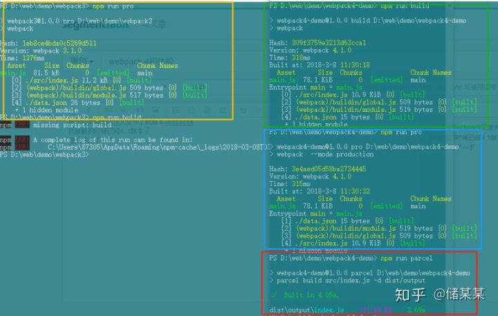

原写于2018-03-08
前段时间webpack又发布了新版本webpack4
我接触的时候已经4.1版本了
node支持的版本必须"node": ">=6.11.5"
webpack打包速度大小比较以及parcel
粗浅的试了一下
下图所示，黄色为webpack3版本；绿色为我写的配置，跟webpack3基本相似，具体不同下面会介绍；蓝色是webpack4自带的production模式；红色为parcel；
具体大小速度大家可以比较一下，还是很给力的

关于配置方面，webpack4应该说最大的噱头就是零配置了
webpack4简单介绍
- 安装
首先在安装上，我们照往常一样
npm i webpack
这里需要注意一点，webpack4需要安装webpack cli，跟往常不一样，大家安装好webpack4以后并不能直接使用，会提示你安装webpack cli
- 运行
第一步安装完之后，我们就可以直接实验了
这是我的文件目录，其中webpack.config.js不需要，这是我后面实验用的，写上自己的js就可以运行了
webpack4默认配置，入口文件默认src/index.js，输出默认dist/main.js

下面是我的配置文件，我测试速度写的，webpack4有默认配置
var path = require('path')
var webpack = require('webpack')
module.exports = {
entry: path.resolve('', './src/index.js'),
output: {
path: path.resolve('', './dist'),
filename: '[name].js',
},//出口
optimization: {
minimize: true
},
mode: 'none',
}
- UglifyJs的相关配置变化
压缩插件写法已经不一样了，换成了
optimization: {
minimize: true
},
//原先的写法，现在会报错，具体看下图
plugins: [
new webpack.optimize.UglifyJsPlugin({
compress: {
warnings: false
}
}),//代码压缩，开发环境慎用
]

- 新增的mode字段，默认模式配置
另外，大家看到了，里面有个mode：'node'，这个是设置模式的
production为默认生产模式，development为生产模式，另外有一个隐藏的none模式，node模式就是不使用默认的，采用我们所配置的
这里有个细节，那就是，当我们设置了pro、dev模式的时候，我们写的配置会被忽略，采用默认的，所以自己配置必须写none模式
自己写配置的话，如果不写node字段，并且没有设置压缩，会警告，代码过大让你拆分